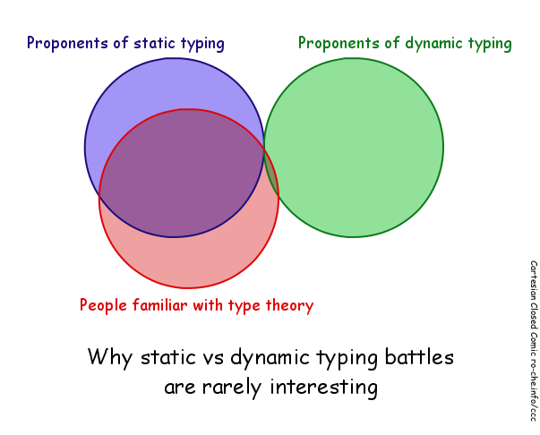
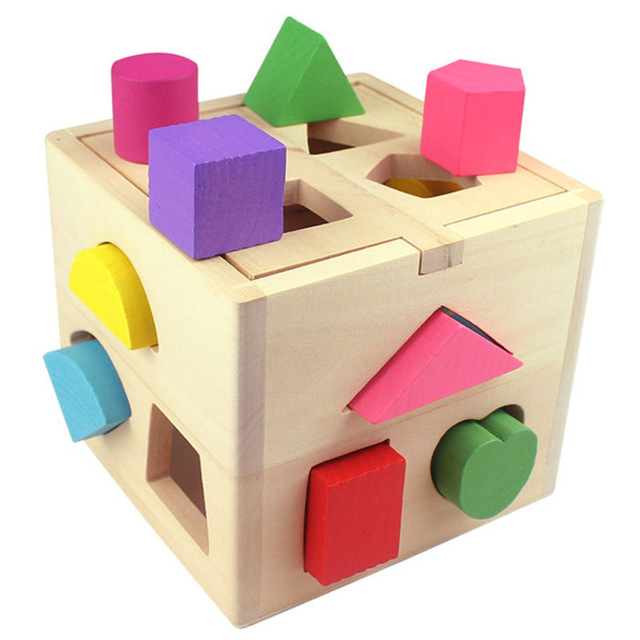
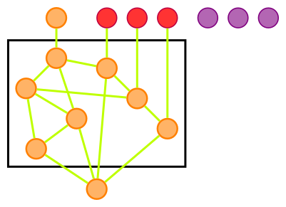
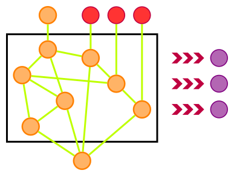
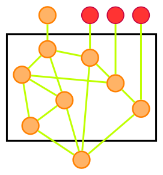
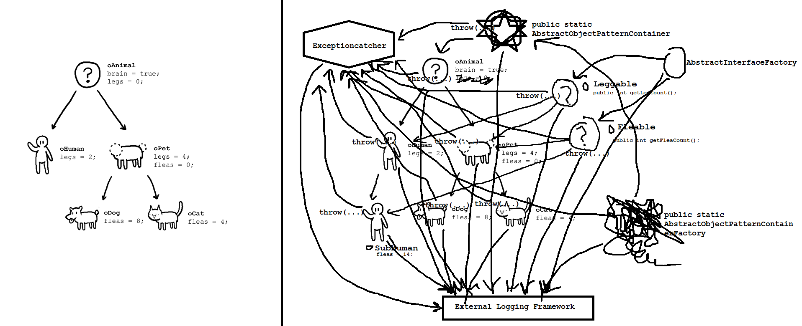
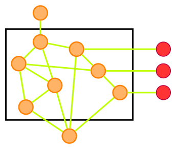
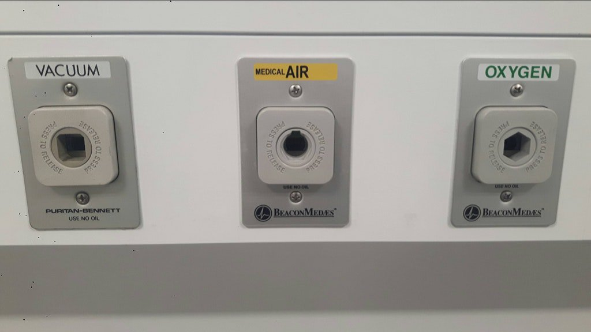
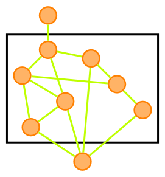

“... switching your language is incredibly expensive for a marginal benefit. Most of the biggest wins in correctness come from process”
― Hillel Wayne @Hillelogram
“A dynamic language is a straightjacketed static language that affords less rather than more expressiveness” ― Robert Harper
“Rejecting incorrect programs is a minor reason for why we need types. Types are first and foremost a design language. We use types to signal intent to other developers and document our code all while having the compiler check that that documentation is still valid”
― Christoph Hegemann @kritzcreek








“People think that computer science is the art of geniuses but the actual reality is the opposite, just many people doing things that build on each other, like a wall of mini stones.” ― Donald Knuth
“The purpose of abstraction is not to be vague, but to create a new semantic level in which one can be absolutely precise.” ― Edsger W. Dijkstra